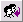
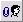
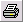
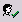
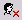
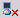
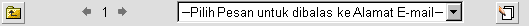

| Ketika anda
membuka pesan, toolbar baru akan ditampilkan, memberikan anda banyak pilihan untuk halaman khusus dimana anda berada pada saat ini. Toolbar Pesan:

Keterangan Diagram:
| Istilah/Ikon |
Nama/Teks Pengganti |
Keterangan Aksi |
 | Kembali ke Halaman Sebelumnya | Membawa anda kembali ke dalam kotak email anda yang sebelumnya. |
 | Pesan Baru | Membuat pesan email baru*. |
 | Balas | Membalas kepada pengirim pesan. |
|
 | Balas ke semua | Membalas kepada semua pengirim pesan email, termasuk penerus pesan email. |
|  | Meneruskan sebagai Lampiran | Meneruskan pesan sebagai file yang dilampirkan. |
|  | Cetak | Menampilkan pesan dalam format cetakan |
 | Kalender | Membuka kalender. |
 | Logout | Keluar dari sesi Open Webmail anda. |
Ikon Pesan Tambahan:
| Istilah/Ikon |
Nama/Teks Pengganti |
Keterangan Aksi |
|
 | Impor Buku Alamat [Pengirim] | Menambahkan pengirim email ke dalam buku alamat anda. |
|
 | Memblokir Pengirim | Memblokir pengirim email dengan menambahkan filter. |
|
 | Memblokir SMTP Relay | Memblokir pesan SMTP Relay dari (server yang meneruskan pesan tersebut. |
Ada toolbar kecil yang kedua di bawah pesan:

"Kembali ke halaman sebelumnya" menampilkan aksi yang sama seperti yang ditampilkan pada grafik di atas. ada panah kiri dan kanan yang menemani angka "1" digunakan untuk melihat-lihat berbagai pesan di dalam mailbox (tanda panah kiri menunjukkan kepada pesan sebelumnya, tanda panah kanan menunjukkan kepada pesan berikutnya). Angka di antara tanda panah memberitahukan anda pesan mana yang sedang dilihat oleh anda (1 menunjukkan pesan yang pertama di dalam mailbox). Menu pilihan di dalam tekst Pilih pesan untuk dibalas ke Alamat email, mengijinkan anda untuk memilih teks tertulis yang ingin anda gunakan untuk membalas email. buka menu untuk menampilkan daftar dari teks tertulis yang sudah anda buat. Sekali anda telah memilih satu diantaranya, anda akan mampu untuk membalas pesan dengan teks tertulis yang sudah anda pilih. Jika anda belum membuat teks tertulis, klik tombol Ubah Pesan (
) setelah itu anda akan mampu mengubah dan/atau membuat teks tertulis yang baru. Untuk melihat definisi dari teks tertulis lihat bagian
Toolbar Pengaturan. * Jika anda sedang melihat pesan di dalam folder Simpan Catatan (lihat bagian Mengatur Folder Anda), tombol ini akan Mengubah pesan, dibandingkan dengan membuat pesan baru. |